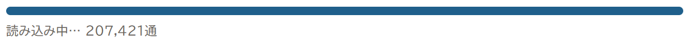

IDおそうじ
これまでに届いたメールから、登録したことのあるネットサービスを洗い出し、情報漏洩のお知らせが届いていたものから順に、片づけをサポートするブラウザアプリです。
何から手をつければよいか、どこで手続きすればよいかを案内します。パスワードの変更や退会は、案内に沿ってそれぞれのサービスの公式サイトで、ご自身で行います（IDおそうじが代わりに手続きすることはありません）。
メールは、あなたのパソコンの外に送りません。パスワードを入れる場所もありません。インストールも不要で、Edge・Chromeで開くだけで使えます。
ただし、メールのデータがパソコンの中にあることが必要です（Thunderbirdの受信フォルダ、Outlookのデータファイル、書き出したメールファイルなど）。Webメールをブラウザで見ているだけの場合は、先に Thunderbird などでメールを受け取っておいてください。
マンガで分かる
パス太（子犬）とキーナ（メガネの黒猫）が、IDおそうじの使い方を紹介します。画像を押すと大きく開きます。
おまけ Thunderbirdを使うと便利なこと
IDおそうじを使うのに、Thunderbirdは必須ではありません（Outlookのデータファイルや、書き出したメールファイルも読み込めます）。メールをまとめて受け取りたい方向けの、おまけのマンガです。


動画で見る
マンガの続きとして、実際の画面で操作する様子です（約1分・音が出ます）。画面に映っているのは、撮影用の架空のサービスです。
使い方
- メールを選ぶThunderbirdのメールフォルダ、Outlookのデータファイル（.pst）、書き出したメール（.mbox / .eml）を選びます。何年分でも、全部読み込みます。20万通（207,421通）まで読み込めることを確かめています。

実際に20万通を読み込んだときの画面 - ①漏洩のお知らせ情報漏洩のお知らせが届いていたサービスを、いちばん上に出します。まずはここだけ片づけます。
- ②一覧で仕分け見つかったサービスを、上から「使う」「使わない」「分からない」で仕分けます。押していくだけです。
- ③使うもの2段階認証・パスキーを設定し、無ければ強いパスワードに変えます。各サービスの設定ページへの入口を案内します。
- ④使わないもの退会（アカウント削除）します。ポイントや定期購入の確認をしてから、各サービスの退会ページへ。
- ⑤まとめて片付け広告だけのものや、終わったサービスは、まとめて片付けます（製品版）。
画面


安心のしくみ
メールは外に送らない
読み込みも判定も、あなたのパソコンのブラウザの中だけで行います。ページの設定で外部との通信を止めていて、画面の「通信の確認」で確かめられます。
パスワードは入れない
IDおそうじにパスワードを入れる場所はありません。変更や退会は、各サービスの公式サイトで行います。
中身が見える
アプリはHTMLファイル1つです。テキストエディタで開けば、何をしているかを確かめられます。
読み込めるメール
| Thunderbird | メールフォルダ（ImapMail / Mail）を選ぶだけ。Gmailなどを Thunderbird で受け取っていれば、ボタン1つで全部まとめてチェックできます。 |
|---|---|
| Outlook | パソコンのOutlookのデータファイル（.pst）。Outlook.com・Microsoft 365 の .ost は読めません。 |
| 書き出したメール | .mbox / .eml ファイル。 |
| Gmail | Googleの審査中のため、公開デモではテスト利用者として登録した方だけが使えます。Thunderbirdで受け取れば読み込めます。 |
| Yahoo!メールなど | ご自身で Thunderbird に受け取る設定ができる方が対象です（設定のお問い合わせにはお答えできません）。 |
くわしくは メールの読み込み手順 をご覧ください。
デモ版と製品版
| デモ版（無料） | メールの読み込みは全量。見つかったサービスの数と「①漏洩のお知らせ」はすべて確かめられます。②〜④の手順と操作は上から10件まで。記録は保存されません。 |
|---|---|
| 製品版 | すべてのサービスで手順と操作／記録の保存（何日かけても続きから）／⑤まとめて片付け／メールアドレスごとの一覧／大事なサービスの見守り／結果ダッシュボード／一覧の書き出し（CSV） |
| 販売 | 製品版は販売準備中です。まずはデモ版で、あなたのメールから見つかる数を確かめてください。 製品版を購入する |
| 動作環境 | パソコン（Windows）の Edge / Chrome を想定しています。 |
感想をお寄せください
「何件見つかった」「ここが分かりにくい」など、デモ版を使った感想をお待ちしています。noteの記事へのコメントで受け付けています。製品版の内容や価格の参考にします。
IDおそうじは、届いたメールから登録の手がかりを探す道具です。すべての登録を見つけることや、情報漏洩の有無を保証するものではありません。パスワードの変更・退会などの手続きは、各サービスの公式サイトで行ってください。登場するサービス名は、撮影用の架空のものです。